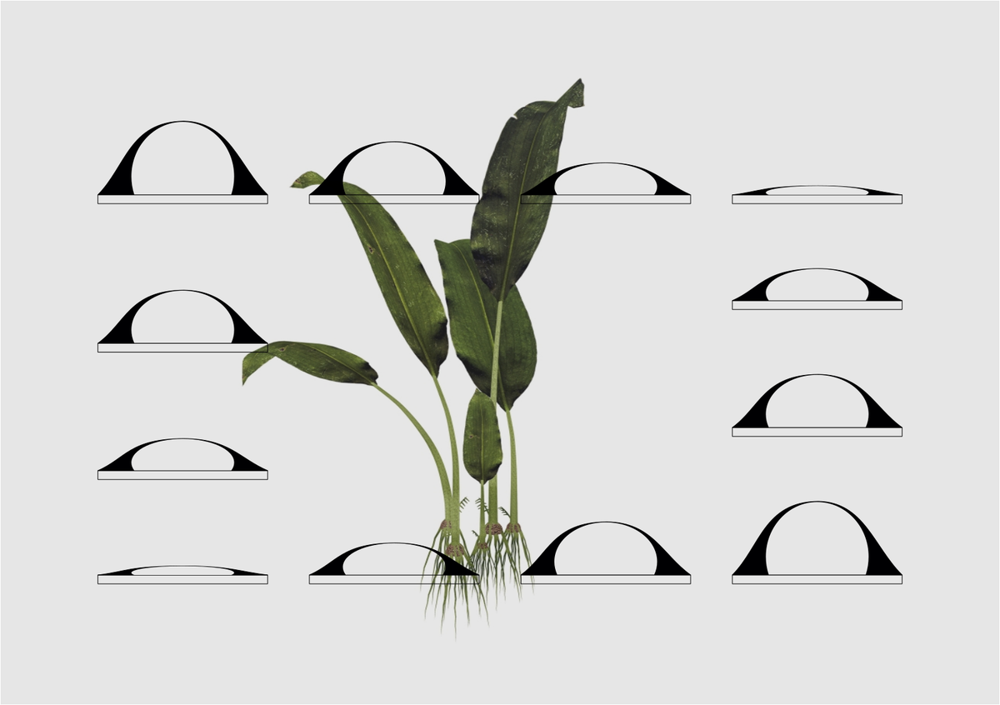
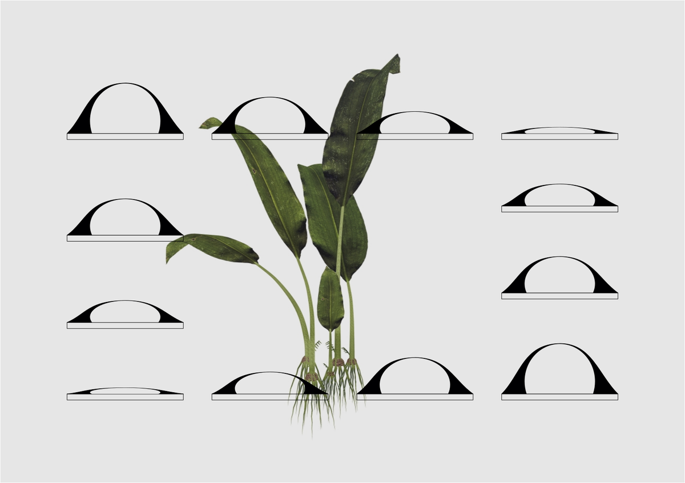

The Green Observatory: Overview
Introduction
A device that transforms the electrical activity of plants into a physical and meditative movement that we, humans, can observe and contemplate.

A device that transforms the electrical activity of plants into a physical and meditative movement that we, humans, can observe and contemplate.
